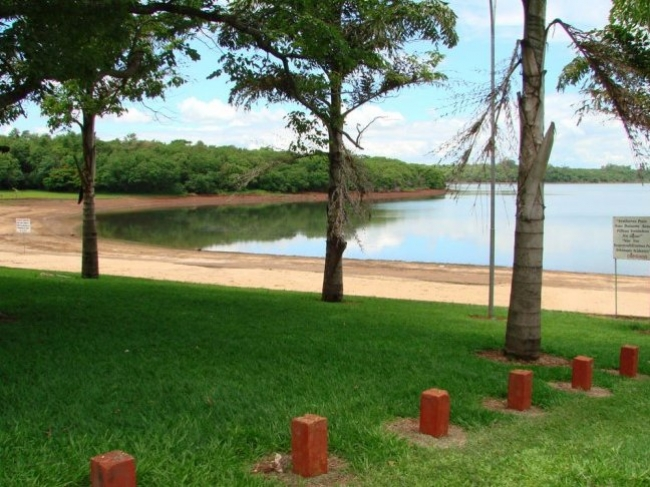
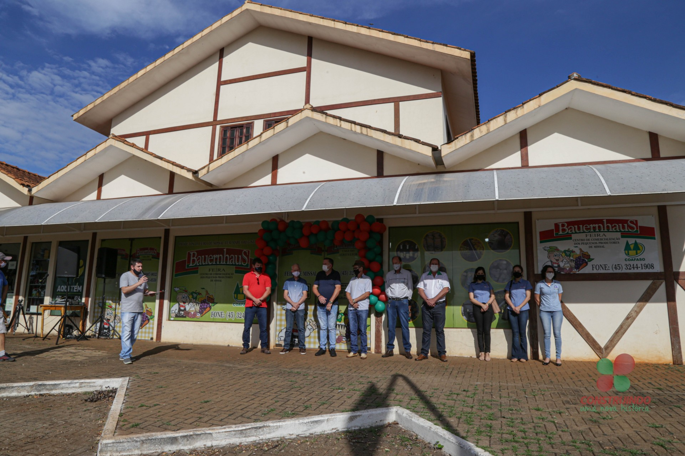
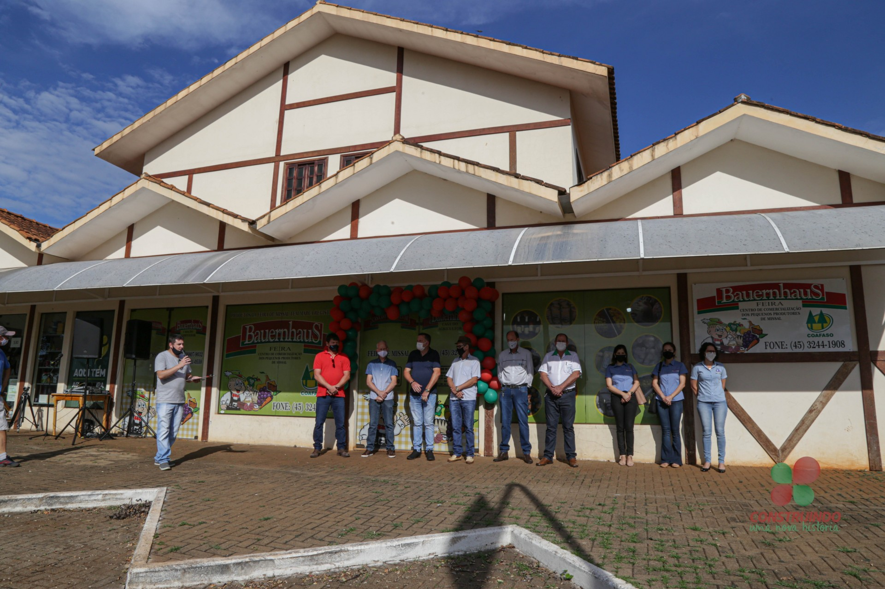
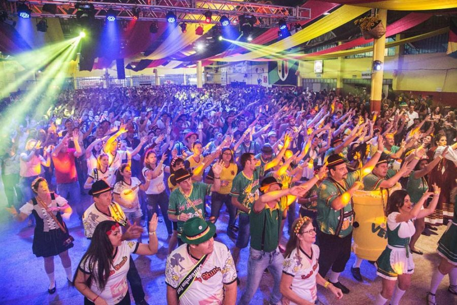
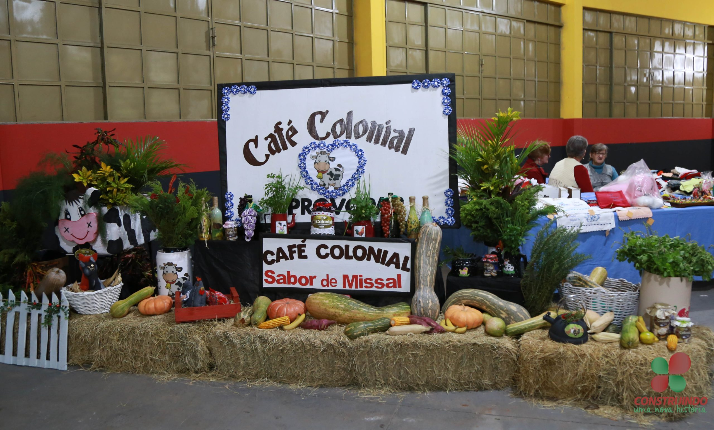

História
A maioria dos colonizadores de Missal (1961 e 1962), pertence à 2ª geração de imigrantes alemães, que trouxeram consigo características da cultura germânica, expressas nas construções enxaimel, nos jardins floridos e na gastronomia, elementos que foram experimentando adaptações às especificidades locais no decorrer dos tempos. A Sipal Colonizadora, fundada pelo Padre José Backes, foi a grande responsável pela venda dos lotes e formação da cidade. Na época, somente famílias que pertenciam à religião Católica poderiam se instalar em Missal. Com orientação de Dom Geraldo Sigaud, líder dos Bispos na época, Pe. José Backes loteou a área de três mil alqueires, que se transformou no Município de Missal. Umas das grandes fontes geradoras de recursos à época da colonização, foi a extração de madeira. O nome do município “Missal” originou-se do fato que os bispos queriam um nome que significasse objeto religioso, para simbolizar de alguma maneira sua origem inserida no fato religioso. Todos conheciam como Gleba dos Bispos, ou Terra dos Bispos. Foram sugeridos vários nomes. O nome escolhido foi MISSAL – inspirado pelos colonizadores e pioneiros, baseado no livro em que o sacerdote se orienta para celebrar a missa – fanal do trabalho espiritual do sacerdote, assim como as terras são fanal do trabalho material do agricultor. Nome sugestivo e de conotações religiosas uma vez que a escolha deste nome é dedução do livro em que o sacerdote da Igreja Católica se orienta para o ofício religioso que é a Santa Missa. Como Missal teve o início de sua colonização orientada pelos bispos e 98% de seus moradores eram de religião católica, é natural que o nome MISSAL teve sua origem neste aspecto. Etimologia – MISSAL – palavra formada pelo termo “missa”, acrescida do sufixo nominativo “al”. O termo “missa” vem do latim “misa” que significa originalmente serviço religioso. O sufixo “al” origina-se do latim ale, significando coleção em quantidade. O termo “Missal” é referência do livro litúrgico que contém o texto de todas as missas do ano. É de uso obrigatório para a igreja católica por decreto do Papa Pio V, a partir de 1570, conforme Decreto do Concílio Vaticano. Na época da fundação o sacerdote ainda rezava a missa em latim e de costas para o povo. (MISSALE ROMANO) O Concílio Vaticano II (1964) aprovou as traduções dos textos litúrgicos, mas conserva uma única e mesma tradição. Entre tamanha diversidade de línguas foi mantida a mesma oração como meio de testemunhar e afirmar a unidade de todos os fiéis. O MISSAL orienta as linhas gerais, segundo as quais se deve ordenar a celebração eucarística, bem como expõe as regras para cada forma particular de oração e tempo litúrgico. Sem dúvida, os pioneiros escolheram e acertaram. Ninguém jamais pensou em mudar o nome e quem mora aqui pode dizer com orgulho: SOU MISSALENSE DE CORAÇÃO. Missal representa a nossa história. No período da emancipação foi considerado como SENTINELA DE ITAIPU, pois limita com o grande Lago Internacional de Itaipu. A formação de Missal deu-se a partir do desmembramento do município de Medianeira e a data oficial de criação do município foi em 30 de dezembro de 1981, por meio da Lei Estadual n° 7.566. No dia 1º de fevereiro de 1983 foram empossados o primeiro Prefeito e os membros da Câmara de Vereadores; nesta data se comemora o aniversário de emancipação político-administrativa.

Turismo
Prainha O terminal Turístico de Vila Natal, a Prainha Artificial de Missal, fica a cerca de 14 km do centro da cidade. Tem ampla área verde, banheiros, quiosques, churrasqueiras, área para camping, lanchonete, campo de futebol, quadra de areia e atracadouro para barcos. É o ambiente propício para passar os fins de semana e temporadas com a família. O Lago Municipal de Missal é o mais novo Cartão Postal do município. O local conta com um caminhódromo no entorno, Academia da Saúde e academia ao ar livre, banheiros e vestiários, quadra sintética para a prática esportiva e espaço para descansar ou contemplar a natureza. Todos os anos, a prefeitura promove a queima de fogos do Réveillon no Lago Municipal, atraindo milhares de pessoas de toda a região. Feira do Pequeno Produtor.A feirinha, como é chamada, é o ponto de comercialização dos produtos coloniais produzidos por seus associados e agroindústrias. Missal, como o berço das agroindústrias, é referência na comercialização desses produtos na região e em outros estados. São mais de 30 agroindústrias dos mais variados segmentos que comercializam os produtos na Feira. Toda quarta-feira acontece a Feira Livre, onde barracas são montadas em frente à Feirinha, justamente para intensificar a venda com a presença do produtor rural.
 

Cultura
Deutsches Fest: festa alemã realizada sem data fixa no município, conta com vários atrativos como o jogo do barril, concurso de chopp em metro, apresentações artísticas, jantares tipicamente germânicos e desfiles alegóricos. Reúne grande número de pessoas de toda a região e estado, que prestigiam a cultura germânica junto aos missalenses. Café Colonial: com mais de 40 tipos de pratos coloniais servidos aos visitantes, o Café Colonial é um evento tradicional no Município, realizado no mês de junho.
Baile com escolha da Miss Missal: realizado anualmente em fevereiro ou julho, para escolher a representante da beleza da mulher missalense.Cuca Missal: escolhida em concurso, o prato demonstra a tipicidade do município, está a venda na Feira do Pequeno Produtor, bem como nas panificadoras e confeitarias da cidade.  